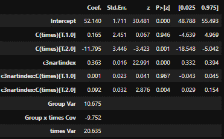
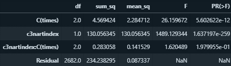
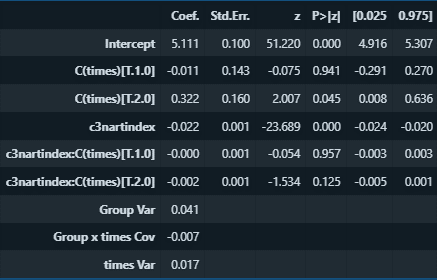

Results#
The below analysis summary is currently structured in 3 stages:
data ingress/cleaning and exploratory data analysis
statistical modelling of CamCog scores
natural language processing for prediction of cognitive decline
Data ingress/cleaning and exploratory data analysis#
The first thing to notice is a LOT of missing data, and lots of empty entries in both the narratives and covariates dara frames. We used the narratives to grab only the rows we want from each dataframe, and if necessary we will impute the missing covariates later.
We noted lots of spelling mistakes in the narratives. I have briefly looked into solutions but it seems none of them are perfect and will require a bit of experimentation and/or manual correction. If they are made by participants then they are potentially interesting. For now I will make the assumption that all spelling errors were made in the original narratives, rather than the transcription process, and leave them in.
Figure 1 shows word frequencies after tokenization followed by removal of puncutation and stopwords. Letter case has been left unchanged, as it possibly indicates sentence onsets and other linguistic features such as proper nouns. Perhaps unsurprisingly, “school” and related words feature heavily (see also Figure 2).
Note
It might be interesting to re-run this on a bi- or tri-gram model as well, to see what phrases feature prominently. For example, the third entry, “remember”, may often appear in the context “I remember”, but also sometimes as “I don’t remember”.
Figure 1. Word frequencies for the entire dataset.
Figure 2. Word cloud based on data from Figure 1
We will implement various other basic descriptive statistics, such as word frequencies and distributions as a function of NART/CamCog etc. Yoav, can you remind me of the phase at which the narratives were recorded? I think it was phase 5?
Statistical modelling of CamCog scores#
As we noted in earlier meetings, there is a “999” code which we now know indicates a missed observation, so we have removed those observations. They occur for almost, but not always the same, PIDs, for NART and CAMCOG. There are none in phase C5. However, there are other missing data cells, ie. they are empty rather than just containing 999s, across all three phases. These are simply treated as nans for now but I should at least characterise them.
Figures 3-5 (left panels) show Camcog score distributions at phases 3-5 (blue), alongside the baseline NART score as measured at phase 3 (red). The right panels show Camcog score as a function of baseline NART at phases 3-5. The red line shows a linear regression of Camcog score on baseline NART score, and the fit parameters and their 95% confidence intervals are shown in red at left bottom.
Figure 3. Left, Distribution of baseline NART and Camcog scores at phase 3. Right, linear regression of Camcog phase 3 score on baseline NART.
Figure 4. Left, Distribution of baseline NART and Camcog scores at phase 4. Right, linear regression of Camcog phase 4 score on baseline NART.
Figure 5. Left, Distribution of baseline NART and Camcog scores at phase 5. Right, linear regression of Camcog phase 5 score on baseline NART.
The significant slope at all 3 time points indicates the presence of a general relationship between Camcog score and baseline NART, in that higher NART scores are associated with generally higher Camcog scores and vice versa. The increase in the size of the left tail of the Camcog distribution between phases 3 and 5 suggests that some participants experienced cognitive decline, as reflected in the notable scattering of datapoints below the fit line in phase 5, leading to a lower r^2 value, and a significant decrease in fit intercept according to the confidence intervals.
The slope of the fit also exhibited a significant increase between phases 3 and 5, implying that baseline NART became more predictive of Camcog score as people aged. This could be interpreted as a neuroprotective effect of premorbid reading level on the likelihood of cognitive decline. To examine this possibility we performed some statistical tests to look for an interaction between baseline NART and study phase (i.e., measurement time point… Yoav, do we have the actual dates of assessment for each PID or are we resricted to the ranges given on the study website?)
Table 1. ANOVA performed on linear model with fixed-effects parameters “times” and “nartindex”, as well as their interaction. Both the change in intercept (“c3nartindex”), reflecting a global change in Camcog, and slope (“c3nartindex:C(times)”), reflecting a change in the effect of baseline NART on Camcog, are significant at p < 0.01.
To understand whether underlying differences in cognition at the individual level have an influence on these changes, we used a mixed-effects model. That is, to ask whether these changes go away when we take individual differences into account, we fitted a mixed-effects model with a random slope and intercept for each participant as a function of time (Table 2).

Table 2. Summary table for linear mixed-effects model with fixed-effects parameters “time” and “nartindex”, as well as their interaction, and two random effects for each participant: a random intercept, and also a random slope as a function of time. This means we are modelling that different participants may have different baseline Camcogs and may decline at different rates. z-values are the parameter estimates divided by their standard errors. p-values are calculated with respect to a standard normal distribution. Results appear to reflect those in Table 1.
However, the Camcog distributions are skewed towards low scores even at phase 3, with an increase in skew and tail heaviness by phase 5. Notwithstanding potential violations of parametric distributional assumptions for statistical inference, it is possible that these low scores constitute outliers that exert an excessively high leverage on the population. We therefore transformed the data by subtracting each score from the maximum possible score (range 0-107) and then taking its natural logarithm. The results are shown in Figures 6, 7 and 8.
Figure 6. Left, Distribution of baseline NART and log-transformed Camcog scores at phase 3. Right, linear regression of log-transformed Camcog phase 3 score on baseline NART.
Figure 7. Left, Distribution of baseline NART and log-transformed Camcog scores at phase 4. Right, linear regression of log-transformed Camcog phase 3 score on baseline NART.
Figure 8. Left, Distribution of baseline NART and log-transformed Camcog scores at phase 5. Right, linear regression of log-transformed Camcog phase 3 score on baseline NART.
According to the confidence intervals for these fits, the intercept change between phases 3 and 5 remained statistically significant, suggesting that the finding of a significant decrease in Camcog score between these sessions is robust. However, the change in slope was non-significant after transforming the data, suggesting that this was not a robust effect in the population as a whole. To investigate further, we fitted the same statistical models as for Tables 1 and 2 (Tables 3 and 4):

Table 3. ANOVA performed on linear model with fixed-effects parameters “times” and “nartindex”, as well as their interaction. Only the change in intercept (“c3nartindex”), reflecting a global change in Camcog, was statistically significant.

Table 4. Summary table for linear mixed-effects model with fixed-effects parameters “time” and “nartindex”, as well as their interaction, and two random effects for each participant: a random intercept, and also a random slope as a function of time. This means we are modelling that different participants may have different baseline Camcogs and may decline at different rates. z-values are the parameter estimates divided by their standard errors. p-values are calculated with respect to a standard normal distribution. Results appear to reflect those in Table 3, with the additional observation that the change in intercept is now only borderline significant (p = 0.045).
Natural language processing for prediction of cognitive decline scores#
To understand whether narrative descriptions of childhood memories could predict Camcog score, we used Python’s Gensim unsupervised machine learning library for representing documents as semantic vectors to lowercase the text. We split the narratives and Camcog scores into training and test sets (80% training) and obtained word embeddings using a Word2vec model. We then generated aggregated sentence vectors by averaging across the word vectors in a sentence, imputed missing values in the labels (I need to be clear in my mind about where these came from next time I run this analysis), and used a random forest regression model fitted to the word vectors to predict Camcog score at phases 3, 4 and 5. Figures 9, 10 and 11 show the feature importance scores for these fits (we are still working out what these mean and will try some other techniques in the next hackathon. Please ignore the titles of these figures, they are currently meaningless), and Figure 12 shows mean absolute error between actual and predicted Camcog score.
Figure 9. Feature importance scores from a random forest regression of Camcog at phase 3 on Word2vec embeddings. Features represent indices of influential positions in the averaged sentence vectors (I think, and even then not sure what that means yet).
Figure 10. Feature importance scores from a random forest regression of Camcog at phase 4 on Word2vec embeddings. Features represent indices of influential positions in the averaged sentence vectors (I think, and even then not sure what that means yet).
Figure 11. Feature importance scores from a random forest regression of Camcog at phase 5 on Word2vec embeddings. Features represent indices of influential positions in the averaged sentence vectors (I think, and even then not sure what that means yet).
**Figure 12. Mean absolute error between actual and predicted Camcog score at each phase.
To do:#
we are planning to do another hackathon to finish the NLP work
perhaps establish a diagnostic cutoff and see if the slope changes significantly for those who either start off in, or move into, clinical territory
Here is an inline directive to return to the landing page: home.